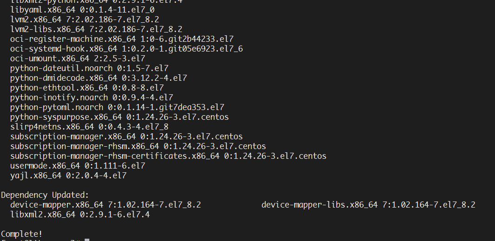

Docker---1-环境安装
Docker 对 Linux 内核版本的最低要求是3.10，如果内核版本低于 3.10 会缺少一些运行 Docker 容器的功能。
Docker 的局限性，Docker 只能运行在64位的系统中。
下面以CentOS为例，Docker支持
- CentOS 7(64位)
- centOS 6.5(64位) or later
推荐使用CentOS 7，如果不是CentOS 7的请安装CentOS 7 64位系统，如果已经安装了CentOS系统的不知道版本的，具体操作如下
查看CentOS的系统版本,确认是CentOS 7.x
cat /etc/redhat-release命令查看系统版本

查看内核版本，确定是高于3.10
cat /proc/version
如果1、2步没有问题，执行步骤4
安装Docker
yum安装docker
sudo yum install docker -y，
如果没有报错，出现如图所示说明安装成功

启动Docker
启动Docker进程
sudo service docker start设置开机自启
systemctl enable docker.service没有报错说明启动成功
也可以查看docker进程是否已经启动
ps -ef|grep docker
卸载Docker
使用
yum -y remove docker
下一篇介绍Docker的使用
-------------本文结束感谢您的阅读-------------